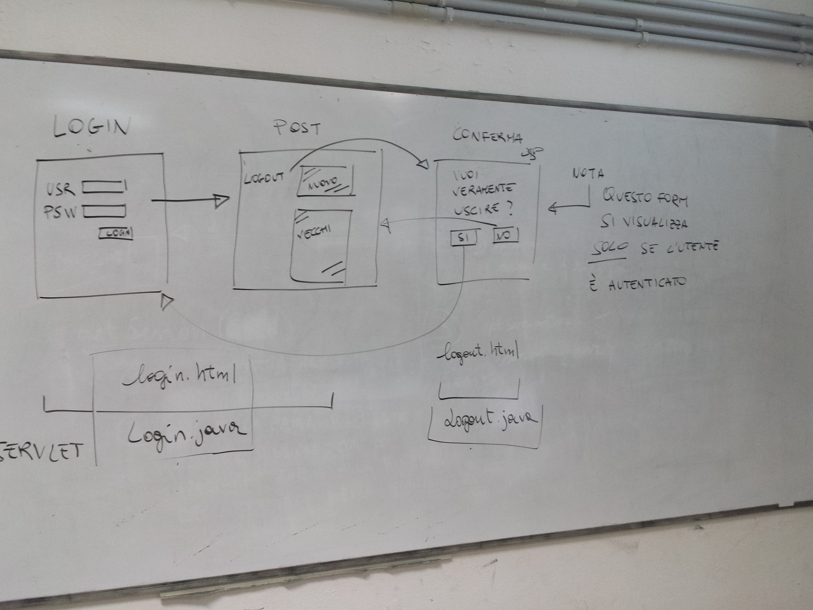

Prima esercitazione (entro 10 luglio 2016)
Esercizio su html
Sviluppare tre pagine HTML che rappresentino
lo scheletro dei contenuti per le seguenti funzionalità
del nostro social network ridotto:
- Login
- Form di inserimento di un post e lettura dei post
degli amici
- Visualizzazione del profilo di un amico (mettete
preferibilmente una vostra foto
Le pagine devono essere simili alla foto che vi allego
(non fate caso alle colonne)

Esercizio su css
Prendere almeno una delle tre pagine ed impostare un layout a
due o tre colonne come visto a lezione.
Impostare gli stili di visualizzazione principali:
- Tipologia di carattere
- Colore di sfondo per le varie parti della pagina
- Allineamento e colori degli elementi di input
- Colore di sfondo diverso che identifichi i post (prendete
esempio da Facebook
Seconda esercitazione (entro 17 luglio 2016)
Login & logout
In questo esercizio il vostro scopo sarà quello di creare
un semplice meccanismo di login per il social network.
Lo schema è riassunto dalla figura seguente:

L'utente deve cioè potersi autenticare accedendo alla URL
login.html della vostra applicazione. Nel caso inserisca le
credenziali corrette, verrà visualizzata la pagina (jsp) con
i post (per il momento va bene che questi ultimi siano statici).
Nel caso di inserimento di credenziali errate, deve essere
mostrato il form di login con un messaggio di errore.
La pagina dei post deve contenere un collegamento alla URl logout.html.
Nel caso l'utente segue questo collegamento, gli deve essere
mostrata una pagina di conferma dell'azione (p.e. Vuoi veramente
uscire dall'applicazione? Si/No). Nel caso di conferma, la
sessione utente deve essere terminata e deve essere mostrato di
nuovo la pagina di login. In caso negativo, si devono mostrare
di nuovo i post.
N.B. la pagina di conferma deve essere mostrata solo
se l'utente era già autenticato.
Dal punto di vista del codice mi aspetto che il vostro
progetto contenga:
- Una servlet Login.html che risponda alla url login.html
- Una servlet Logout.html che risponda alla url logout.html
- Una jsp che contenga il form di login
- Una jsp che contenga i post dell'utente (statici,
cioè direttamente scritti solo con html), con un link
per effettuare la logout.
- Una jsp che contenga il form di conferma del logout
Per consegnare seguite questi passi:
-
Effettuate una clean del progetto.
Serve per rimuovere i file compilati ed evitare che
vengano messi in quarantena dal gestore di mail per
evitare che ci siano virus. Fate click destro sul progetto
e selezionate Clean.
-
Create un pacchetto zip dell'intero progetto ed
inviatemelo per email. Come oggetto potete usare
[FPW] Consegna seconda esercitazione
Terza esercitazione
In questo esercizio il vostro scopo sarà quello di visualizzare
i post presenti nel sistema e permettere all'utente di aggiungerne
di nuovi.
Per fare questo vi viene richiesto di:
-
Aggiungere al proprio db una tabella che descriva i post.
Aggiungete anche le query per la creazione e l'inserimento
dati nel file creaDb.sql
-
Aggiungere nel package model una classe che descriva i Post
-
Aggiungere nella classe Db tutti i metodi necessari per
caricare i Post dal database.
-
Creare una Servlet Posts che risponde alla url posts.html
Questa servlet deve:
-
Mostrare una post.jsp che contiene il form per
aggiungere i post ed una lista di post
-
Nel caso non riceva alcun comando, deve caricare
dal db la lista dei post e passarla a post.jsp
-
Nel caso riceva un comando di inserimento di un
nuovo post, deve prima salvare il nuovo post nel db,
caricare la lista dei post e passarla a post.jsp
- Plus: caricare i post in in ordine inverso rispetto alla
loro creazione
Per consegnare seguite questi passi:
-
Effettuate una clean del progetto.
Serve per rimuovere i file compilati ed evitare che
vengano messi in quarantena dal gestore di mail per
evitare che ci siano virus. Fate click destro sul progetto
e selezionate Clean.
-
Create un pacchetto zip dell'intero progetto ed
inviatemelo per email. Come oggetto potete usare
[FPW] Consegna seconda esercitazione